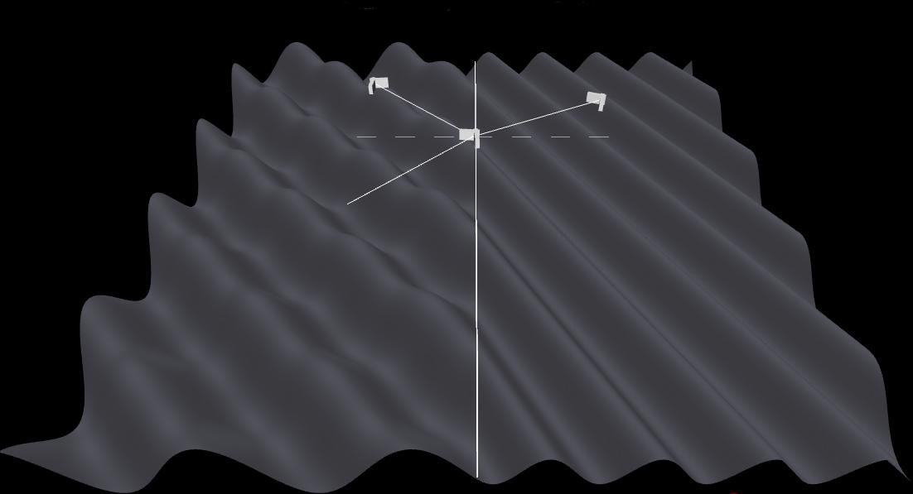
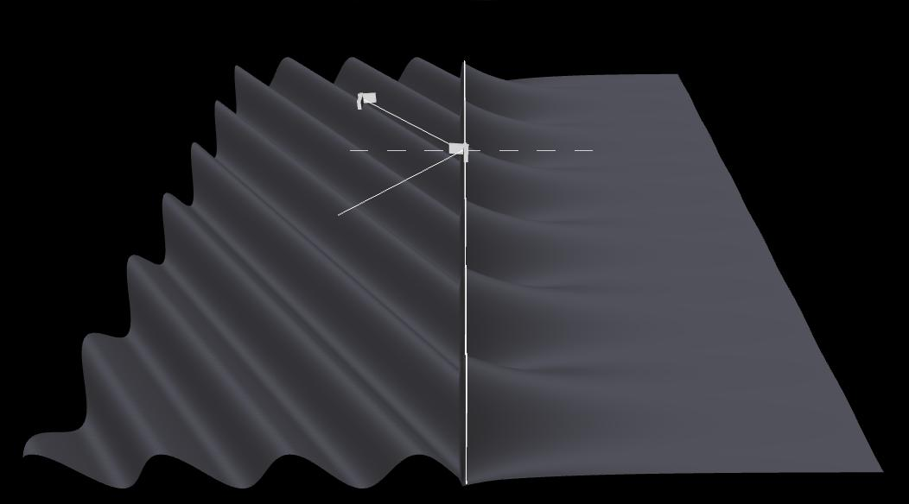

Definitions
Angle of incidence = angle between the incident wave vector and the normal to the interface (dashed line)
n1 = index of refraction of Medium 1 (medium on left)
n2 = index of refraction of Medium 2 (medium on right)
Image 1
Angle of incidence = 45 degrees, n1 = 1.0, and n2 = 1.50.
Only the incident wave is shown in the first medium.
To download the high resolution image, copy the following link into your
Image 2
The same parameter values as for Image 1. Only the reflected wave is shown in the first medium.
To download the high resolution image, copy the following link into your

Image 3
The same parameter values as for Image 1. The superposition of the incident and reflected waves is
shown in the first medium.
To download the high resolution image, copy the following link into your
Image 4
Angle of incidence = 41.0 degrees, n1 = 1.50, and n2 = 1.00. Only
the incident wave is shown in the first medium.
To download the high resolution image, copy the following link into your
Image 5
Same parameter values as for Image 4. Only the reflected wave is shown in the first medium.
To download the high resolution image, copy the following link into your
Image 6
Same parameter values as for Image 4.. The superposition of the incident wave and the
reflected wave is shown in the first medium.
To download the high resolution image, copy the following link into your
Image 7
Angle of incidence = 42.0 degrees, n1 = 1.50, and n2 = 1.00.
Only the incident wave is shown in the first medium.
To download the high resolution image, copy the following link into your
Image 8
Same parameter values as for Image 7. Only the reflected wave is shown in the first medium.
To download the high resolution image, copy the following link into your

Image 9
Angle of incidence = 43.0 degrees, n1 = 15.0, and n2 = 1.00.
Only the incident wave is shown in the first medium.
To download the high resolution image, copy the following link into your
Image 10
Same parameter values as for Image 9. Only the reflected wave is shown in the first medium.
To download the high resolution image, copy the following link into your